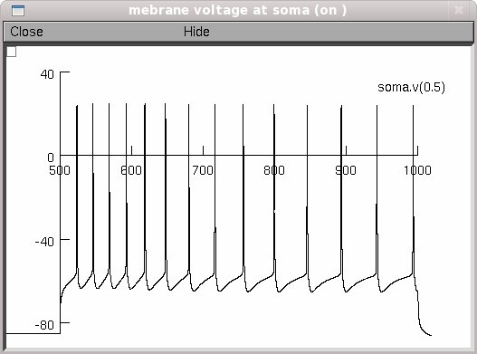

This is the readme for the model associated with the paper: Uebachs et al. Efficacy loss of the anticonvulsant carbamazepine in mice lacking sodium channel beta subunits via paradoxical effects on persistent sodium currents, in revision. These model files were supplied by Marie-Therese Horstmann. Usage: ------ Check that you have NEURON installed (available from http://www.neuron.yale.edu). Autolaunch from ModelDB **or** download and extract the archive and compile the mod files to run under ... linux/unix ---------- by typing nrnivmodl in the top level directory. Then type nrngui mosinit.hoc mswin ------- Run mknrndll, cd to the expanded directory and press make nrnmech.dll button. Double click on the mosinit.hoc file. MAC OS X -------- Drag and drop the expanded folder onto mknrndll icon in the NEURON application folder. Drag and drop the mosinit.hoc file onto the nrngui icon to start the simulation. Once the simulation is running: ------------------------------- Click the "Run simulation/graph then write file" button to recreate figure 9A from the paper:  The simulation takes 7 minutes on a linux 2.8GHz pentium 4. You can check whether it's running or not by looking at the "t" parameter which shows the current "model time". You can stop the simulation by the "stop" button. There is a 500ms pre-iteration period before the current stimulation. The model needs this time to establish a steady state. The membrane voltage trace from soma is written in a file called "outputdata.dat" in the directory, where the model is located. This is a plain ascii file. One data point corresponds to 0.25ms. You can also, of course, change the model parameters varied in the publication above.